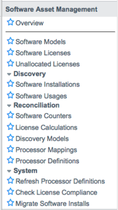

Software Asset Management
| |
Note: This article applies to Fuji and earlier releases. For more current information, see Software Asset Management at http://docs.servicenow.com
The ServiceNow Wiki is no longer being updated. Visit http://docs.servicenow.com for the latest product documentation. |
Contents
1 Overview
Software asset management (SAM) systematically tracks, evaluates, and manages software licenses and software usage. A strong SAM program can help an organization reduce software costs, improve compliance, and simplify or develop processes for employee software requests. SAM programs can also help control inventory through accurate databases, which in turn helps identify organizational software needs, identify unused software that can be deleted, as well as reduce or consolidate the number of software vendors used.
2 Setup Process
Use this method to get started with software asset management.
- Identify Software Owned. There are three methods of identifying the software your organization owns:
- Migrating information from the ServiceNow Software License Management application (see Upgrading to Software Asset Management for details).
- Using Discovery to identify currently owned software and begin working with the SAM application.
- Identifying and adding the software manually or with a third-party tool.
- Make the Configuration Management Database Accurate
- Clean up information in the configuration management database (CMDB). At first, focus on your top 10-20 software vendors.
- Create Software Models
- Create software models for all of the software your organization wants to monitor. Software models can also be imported from another source such as a Discovery application, an existing data set of software licenses, or a third-party source. For more information, see Creating a Software Model.
- Create Software License Records
- Create software license records for all of the software your organization owns. This information can also be based on information from a purchasing source or imported as a spreadsheet. For more information, see Software Licenses.
- Configure Software Counters
- Configure software counters to view your organization's software compliance levels. For more information, see Using Software Counters for Software License Reconciliation.
Watch Setting Up Software Asset Management.
3 Roles
Software asset management adds the following user role.
| Role Title | Contains Role Names | Description |
|---|---|---|
| sam | inventory_user category_manager contract_manager financial_mgmt_user |
Can create, edit, change, and manage software licenses. |
4 Menus and Modules
The Software Asset Management application contains these modules:
|  |
|
{kind=link}
5 Activating Software Asset Management
If you are currently using the Software Asset Management Extensions or Software License Management feature, please read the upgrading instructions before activating the Software asset management plugin. An administrator can activate the Software asset management plugin to access the application.
| Click the plus to expand instructions for activating a plugin. |
|---|
|
If you have the admin role, use the following steps to activate the plugin.
|
5.1 Integrations and Software Asset Management
When you activate the plugin, transform maps for these integrations also updated:
- Discovery
- Microsoft SCCM
- Altiris
- LANDesk
You must reactivate the Software Asset Management plugin if you reactivate any of these integration plugins.
6 Enhancements
6.1 Fuji
- The Software Licenses embedded list on the Licenses tab of the Software Model form shows the software licenses that should be created automatically from this model, rather than all assets, regardless of whether they are software licenses.
- The By number of users license calculation is renamed Number of installs per user on the Software License Calculation form.
- The Asset Entitlements form section is renamed Device Entitlements on the Software License form.
6.2 Eureka
- The Oracle Process Pack plugin (com.snc.sam.oracle.pp) provides the capability to manage software licensed under the Oracle licensing model.
- You can view when software counters were last completed and last started from the Software Counters page.
- You can specify the software installations that can be associated with a software counter.
- You can view a Software Counter Compliance Violations table using a customer license calculation scripts.
- The Verify entitlements and Generate details check boxes are added to the Software Counter form to speed up the software counter process.
- Each time a count is completed, the system automatically generates a Software Counter History [sam_sw_counter_history] record, which is a read-only copy of the software counter record.
- You can configure start and end dates for software upgrade and downgrade rights.
- You can merge multiple software licenses that are linked to the same software model into one new consolidated license.
- You can use a discovery tool to track installed database software and options.
- A system property called sam.install_deletion_deadline sets the interval in which the SAM Software Counters scheduled job removes software installations that have not been discovered with a configuration item.
6.3 Dublin
- Installations of an unlicensed software version can be counted as part of a licensed version in a Software Model record by defining the unlicensed version as the downgrade child of the licensed version. This allows users of unlicensed versions to keep their installations, which are counted against the license of the upgrade parent.
- You can view Contract model, Short description, and Vendor details in the Contract reference lookup list on software counter records.
- You can view Workstation and User details in the Software Counter Details related list on software counter summary records.
- Two Related Links in the Software Discovery Model form allow administrators to create new software models and counters. Use the same links in the Actions menu below the list view to create new models and counters for multiple Discovery models.
- SaaS contract types are supported for Software Contracts.
6.4 Calgary
- The sam role contains the Financial User (financial_mgmt_user) role.